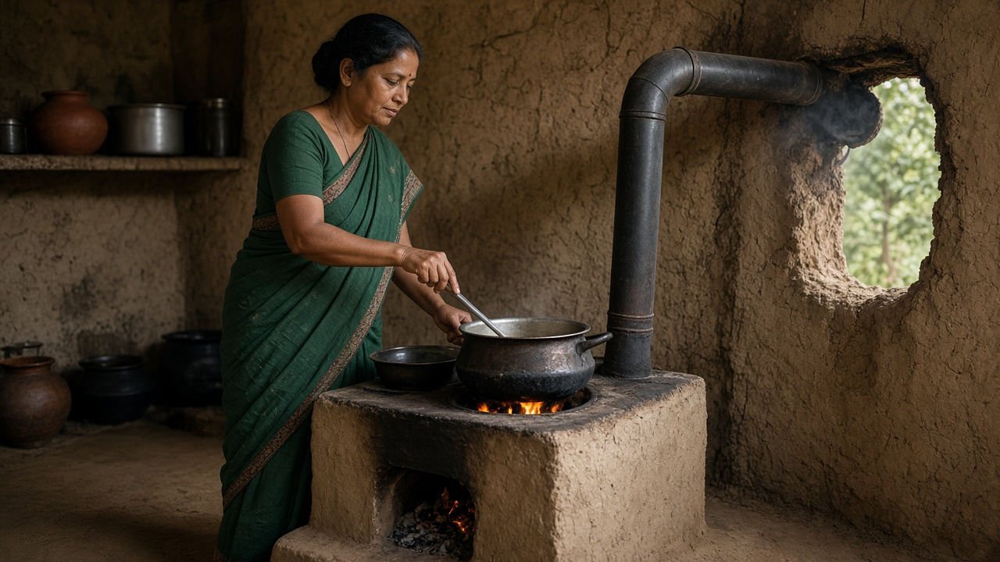
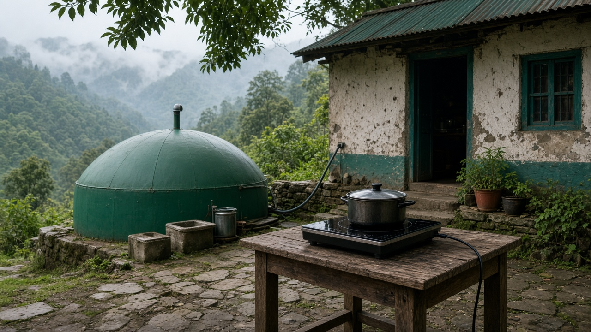
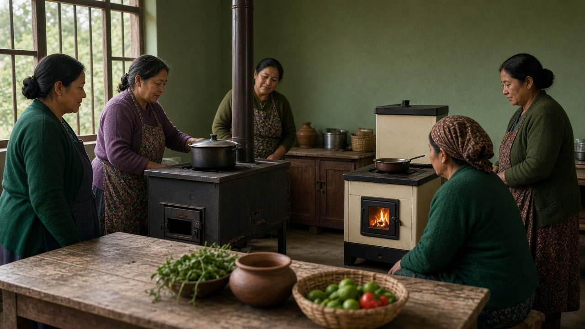

Sustainable Cookstoves and Clean Cooking
Published on August 29, 2026

Clean cooking addresses one of the most widespread energy challenges globally: billions of people still rely on open fires or inefficient stoves burning wood, charcoal, or dung for daily meals. Traditional cooking produces indoor air pollution linked to respiratory disease, particularly among women and children who spend the most time near stoves. Collecting firewood consumes hours and contributes to forest degradation in areas where fuel demand exceeds sustainable supply. Sustainable cookstoves and alternative fuels reduce smoke, improve combustion efficiency, and lower greenhouse gas and black carbon emissions that also affect regional climate and glacier melt.
Solutions span improved biomass stoves with insulated combustion chambers and chimneys, biogas from household digesters, liquefied petroleum gas where affordable and accessible, electric induction cookers powered by renewables, and ethanol or pellet fuels from agricultural waste. No single technology fits all contexts; cultural preferences, fuel availability, affordability, and maintenance capacity determine appropriate choices. Programs that distribute stoves without user training or follow-up often see abandonment when parts break or users perceive no benefit over familiar open fires.
International initiatives treat clean cooking as a development, health, gender equity, and climate priority simultaneously. Carbon finance and results-based funding have subsidized millions of stoves, though verification of actual use remains important to avoid inflated claims. Integrating clean cooking with forestry protection, renewable mini-grids, and women's cooperatives strengthens outcomes. Health clinics and schools can serve as demonstration hubs where communities see smoke reductions firsthand before adopting new technologies at home. Achieving universal clean cooking by mid-century requires sustained policy attention often overshadowed by electricity and transport debates, yet the daily impact on human wellbeing and environmental quality is immediate and profound for households across rural South Asia and beyond.

स्वच्छ खाना पकाउनेले विश्वव्यापी सबैभन्दा व्यापक ऊर्जा चुनौतीहरू मध्ये एक सम्बोधन गर्छ: अर्बौं मानिस अझै दैनिक भोजनका लागि खुला आगो वा काठ, कोइला वा गोबर जल्ने अकुशल चुलोमा निर्भर छन्। परम्परागत खाना पकाउँदै घरभित्र वायु प्रदूषण हुन्छ, जुन श्वासप्रश्वास रोगसँग जोडिएको छ, विशेष गरी चुलो नजिक बढी समय बिताउने महिला र बालबालिकामा। दाउरा कुट्ने कामले घण्टौं खपत हुन्छ र इन्धन माग दिगो आपूर्ति नाघेका क्षेत्रमा वन क्षयमा योगदान पुर्याउँछ। दिगो चुलो र वैकल्पिक इन्धनले धुँवा घटाउँछ, दहन दक्षता सुधार्छ, र हरितगृह ग्यास र कालो कार्बन उत्सर्जन पनि घटाउँछ, जसले क्षेत्रीय जलवायु र हिमनदी पग्लनमा पनि असर पार्छ।
समाधानहरूमा ताप नियन्त्रित दहन कक्ष र धुवाँ नली भएका सुधारिएका जैविक इन्धन चुलो, घरेलु पाचकबाट बायोग्यास, सस्तो र उपलब्ध भए तरल पेट्रोलियम ग्यास, नवीकरणीयले चल्ने विद्युतीय इन्डक्सन चुलो, र कृषि अपशिष्टबाट इथानोल वा पेलेट इन्धन समावेश छ। कुनै एक प्रविधि सबै सन्दर्भमा मिल्दैन; सांस्कृतिक प्राथमिकता, इन्धन उपलब्धता, किफायतीपन र मर्मत क्षमताले उपयुक्त विकल्प निर्धारण गर्छ। प्रयोगकर्ता तालिम वा पछिल्लो अनुगमन बिना चुलो वितरण गर्ने कार्यक्रमहरू प्रायः पुर्जा बिग्रे वा खुला आगोभन्दा लाभ नदेखे त्यागिन्छन्।
अन्तर्राष्ट्रिय पहलहरूले स्वच्छ खाना पकाउनेलाई विकास, स्वास्थ्य, लैङ्गिक समानता र जलवायु प्राथमिकता एकैसाथ मान्छन्। कार्बन वित्त र नतिजा-आधारित कोषले लाखौं चुलोमा अनुदान दिए, तर बढाइ चढाएका दावीबाट बच्न वास्तविक प्रयोग प्रमाणीकरण महत्त्वपूर्ण छ। स्वच्छ खाना पकाउनेलाई वन संरक्षण, नवीकरणीय साना ग्रिड र महिला सहकारीसँग एकीकरण गर्दा नतिजा बलियो हुन्छ। स्वास्थ्य क्लिनिक र विद्यालय प्रदर्शन केन्द्र बन्न सक्छन्, जहाँ समुदायले घरमा नयाँ प्रविधि अपनाउनु अघि धुँवा कमी प्रत्यक्ष देख्छ। २०५० को मध्यसम्म सबैका लागि स्वच्छ खाना पकाउनेका लागि विद्युत र यातायात बहसले छोप्ने निरन्तर नीति ध्यान चाहिन्छ, तर ग्रामीण दक्षिण एसिया र परेका घरधुरीमा मानव कल्याण र वातावरणीय गुणस्तरमा दैनिक प्रभाव तत्काल र गहिरो छ।

स्वच्छ खाना पकाना विश्व स्तर पर सबसे व्यापक ऊर्जा चुनौतियों में से एक को संबोधित करता है: अरबों लोग अभी भी दैनिक भोजन के लिए खुली आग या लकड़ी, कोयला या गोबर जलाने वाले अकुशल चूल्हों पर निर्भर हैं। पारंपरिक खाना पकाने से घर के अंदर वायु प्रदूषण होता है, जो श्वसन रोग से जुड़ा है, विशेष रूप से चूल्हे के पास सबसे अधिक समय बिताने वाली महिलाओं और बच्चों में। लकड़ी इकट्ठा करने में घंटे लगते हैं और जहां ईंधन मांग टिकाऊ आपूर्ति से अधिक है वहां वन क्षय में योगदान होता है। टिकाऊ चूल्हे और वैकल्पिक ईंधन धुआं कम करते हैं, दहन दक्षता सुधारते हैं, और हरितगृह गैस और काले कार्बन के उत्सर्जन भी घटाते हैं, जो क्षेत्रीय जलवायु और हिमनदी पग्लाव को भी प्रभावित करते हैं।
समाधानों में ताप नियंत्रित दहन कक्ष और धुआं नली वाले सुधारे जैविक इंधन चूल्हे, घरेलु पाचक से बायोगैस, सस्ता और उपलब्ध होने पर तरल पेट्रोलियम गैस, नवीकरणीय से चलने वाले विद्युतीय इंडक्शन चूल्हे, और कृषि अपशिष्ट से इथानॉल या पेलेट ईंधन शामिल हैं। कोई एक प्रौद्योगिकी सभी संदर्भों में फिट नहीं होती; सांस्कृतिक प्राथमिकताएं, ईंधन उपलब्धता, किफायतीपन और रख-रखाव क्षमता उपयुक्त विकल्प निर्धारित करते हैं। उपयोगकर्ता प्रशिक्षण या पश्चात अनुगमन के बिना चूल्हे बांटने वाले कार्यक्रम अक्सर पुर्जे टूटने या खुली आग से कोई लाभ न दिखने पर छोड़ दिए जाते हैं।
अंतर्राष्ट्रीय पहल स्वच्छ खाना पकाने को विकास, स्वास्थ्य, लैंगिक समानता और जलवायु प्राथमिकता एक साथ मानती हैं। कार्बन वित्त और परिणाम-आधारित कोष ने लाखों चूल्हों की सब्सिडी दी, हालांकि बढ़ाए चढ़ाए दावों से बचने के लिए वास्तविक उपयोग सत्यापन महत्वपूर्ण है। स्वच्छ खाना पकाने को वन संरक्षण, नवीकरणीय सूक्ष्म ग्रिड और महिला सहकारी के साथ एकीकृत करने से परिणाम मजबूत होते हैं। स्वास्थ्य क्लिनिक और स्कूल प्रदर्शन केंद्र बन सकते हैं, जहां समुदाय घर पर नई प्रौद्योगिकी अपनाने से पहले धुआं कमी प्रत्यक्ष देखते हैं। २०५० के मध्य तक सार्वभौमिक स्वच्छ खाना पकाने के लिए बिजली और परिवहन बहसों से छिपी निरंतर नीति ध्यान चाहिए, फिर भी ग्रामीण दक्षिण एशिया और उससे आगे के घरों में मानव कल्याण और पर्यावरणीय गुणता पर दैनिक प्रभाव तत्काल और गहरा है।